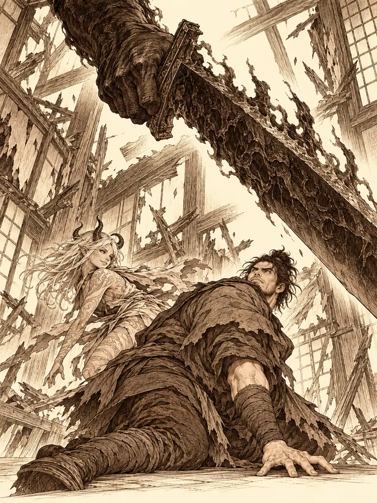

Capítulo 133
Traición en el shogunato
Libro VIII · El hilo maldito
Los precios habían vuelto a subir. En los puestos del mercado ya no quedaban casi materiales, y lo poco que había se vendía a una cifra que los tenderos decían mirando al suelo. En la base, Calista esperó a que se fueran todos para sentarse frente a Kazuki.
"¿Qué pretendías mintiendo sobre el contrato? ¿Quién eres en realidad?".
Kazuki no perdió la sonrisa tranquila de noble. Podía tomar la apariencia de cualquier persona a la que hubiera observado un rato, le explicó. Lo que ella había visto el otro día era uno de sus otros rostros, el de un muchacho relacionado con Barbatos, que usaba para moverse por los barrios bajos sin que lo tomaran por lo que era. Admitió que había hecho mal en presentarse con aquella historia. Calista lo escuchó entero, se levantó, caminó despacio hasta él y apoyó la mano abierta en la mesa.
"No voy a pedirte el símbolo de los cazadores. Pero voy a tenerte un ojo encima. Y espero que no me llegue nada malo de ti".
Gelbreak entró en ese momento, miró el silencio de los dos, le dio a Calista un beso en la mejilla y le susurró al oído que tenía una pista.
Lo que Gelbreak había notado alrededor de Rua era una protección mágica muy poderosa. Demasiado poderosa para una regente que, en un país donde casi nadie se fiaba de la magia, no tenía por qué llevarla encima. Le olía a nigromancia. Fueron a palacio. Banzo estaba allí, de pie junto a Rua, haciendo de guardián, y a su lado un samurái que estrenaba ese día el puesto en la guardia de la shogun, José Luis, con la armadura temblándole de nervios.
Calista hizo la reverencia que correspondía y se fijó. La shogun temblaba. Casi no se notaba, pero temblaba, como alguien que tiene miedo. Los nobles a su alrededor solo hablaban de cuentas: lo que costaban los refugiados, lo que nadie quería pagar. Kazuki se puso a escuchar pensamientos y oyó los de todos, la noble que solo quería terminar sus números, Nomi quejándose de los gastos. Los de Rua no pudo leerlos.
En una sala apartada, Gelbreak apuntó a Kazuki con el estoque.
"¿Sabes quién más sabe hechizos de nigromancia? Los generales demonio".
Banzo vigilaba al noble. Kazuki le entregó a Calista su grimorio, cubierto de joyas y con el emblema de su familia, para que lo revisara. Ella pasó las páginas una por una y no encontró nada de nigromancia. Aun así se lo quedó, por si acaso. Se repartieron el trabajo: Kazuki se disfrazaría de sirvienta, Gelbreak iría invisible, Banzo hablaría con los soldados y Calista con los nobles.
Antes de apartarse, Banzo se acercó a Rua, le susurró que estaría cerca y conjuró a su lado un pequeño ojo mágico para vigilarla.
Rua le tomó las manos.
"Banzo, por favor, ayúdame".
Y lo besó en la boca.
Todo el salón se quedó quieto. Banzo sintió una voz entrar en su cabeza como agua por una grieta. Sonó algo muy rápido, un arma cortando el aire, y José Luis cayó muerto a su lado. Cuando Banzo despegó la boca, la mujer que tenía delante ya no era Rua. Se le parecía mucho, pero tenía el pelo blanco, cuernos, la piel cubierta de marcas. Le sonrió. Luego señaló hacia un rincón donde el aire se rompió y apareció Gelbreak, que había perdido la invisibilidad.
"Mátalo".
Banzo agarró el cuerpo de José Luis, lo tiró contra la pared y se lanzó contra su amigo con los ojos rojos. La furia le subía por la piel sin un solo grito. Le dio a Gelbreak un golpe que lo lanzó a través de una pared de papel y madera y la derribó. El drow se apartó como pudo.
"Banzo, ¿qué haces? ¡Soy yo!".
Unos espíritus se plantaron delante del goliat, sus ancestros. Una anciana le gritaba que qué estaba haciendo, niñato. Banzo la deshizo de un manotazo y siguió avanzando.
Calista se puso delante de los nobles con el abanico extendido y les gritó que salieran, que aquello era cosa de los cazadores, y mandó a un guardia a buscar refuerzos. Kazuki corrió a sacar a las sirvientas de las cocinas y de los dormitorios. Calista sabía que no podía ganar aquello con la fuerza, así que hizo lo único que sabía hacer mejor que nadie: hablar, y ganar tiempo.
"Así que eres Rua. O eres otra persona".
La mujer sacó de la nada una espada de hoja roja, en llamas, llena de pinchos.
"Siempre he sido Rua, muchacha. La muerte del shogun salió bastante bien. Solo me faltaban unos ineptos que me ayudaran. Pero habéis sido demasiado ineptos y he tenido que acelerar las cosas".
"Así que fuiste tú quien envenenó al shogun", dijo Calista, y se le tensó la mandíbula. "Esas hierbas que compré eran tuyas, ¿verdad?".
Rua sonrió.
"¿Crees que ya me preocupa? Las Puertas Negras están abiertas, la cúpula a punto de romperse y mi amor a punto de despertar. Es el momento perfecto". Miró a Calista. "Ahora solo me queda matar a unos cuantos cazadores".
Le salió un rayo del dedo que saltó de un cuerpo a otro. La conversación se había acabado. Calista le devolvió el grimorio a Kazuki para que pudiera ayudar y se apartó de un salto mágico hasta las ventanas, porque la espada de aquella mujer alcanzaba muy lejos.
Gelbreak dejó de esquivar. Tiró el estoque al suelo, puso las dos manos en el pecho de Banzo y le habló mientras la magia de su voz le entraba al goliat por los oídos.
"Banzo. Soy Gelbreak. Hemos luchado juntos. Soy yo".
Banzo dudó. Empezó a ver a Gelbreak como era, y la voz de su cabeza seguía allí, pero se volvió pesada, extraña, como si no fuera la de Rua. Dio media vuelta, atravesó la pared por donde había entrado y se lanzó sobre la mujer para inmovilizarla contra el suelo. Ella lo esquivó.
"¿Ya quieres tocarme, Banzito? Lo siento, no podemos estar juntos. Tengo a otra persona".
A su espalda apareció una mano enorme, oscura, con una espada que parecía sacada del infierno. La espada de Otakemaru. Bajó sobre Banzo.
"Mi marido es un poco celoso".
"¿Dónde está Rua?", le gritó Banzo. "¿Dónde está la verdadera?".
"Siempre he sido yo".
Banzo les gritó a sus compañeros que no la tocaran. Calista lo curaba y lo animaba desde lejos. La mujer la miró de reojo.
"Molestas demasiado, muchacha".
Le deshizo la defensa y le lanzó un rayo que casi la mata. Gelbreak corrió a curarla. Kazuki aceleró a Banzo con un gesto y se subió a lo alto de una pared rota para disparar desde allí. Banzo consiguió por fin tumbarla y sujetarla contra el suelo. La mujer se convirtió en niebla en sus manos y reapareció junto a Gelbreak, y en un instante tenía al drow al borde de la muerte con la hoja apoyada en el cuello.

Calista cambió. Le salieron escamas, alas, un cuerpo de dragón, y desde el aire escupió un torrente de agua sobre la enemiga y otra ola de curación sobre Gelbreak. Antes de retirarse con ella, el drow oyó algo que la mujer le susurró. Nadie más lo escuchó.
Kazuki lanzaba proyectiles mágicos desde las alturas y mantenía a Banzo acelerado, y los golpes del goliat terminaron por romper la figura borrosa tras la que se protegía. No cambiaba de forma como Kazuki; era otra cosa, una criatura capaz de adoptar un rostro y vivir dentro de él, y que tuviera la cara de Rua no demostraba que hubiera otra Rua en alguna parte. La magia de Gelbreak le deshizo medio cuerpo. Aun así seguía en pie, regenerándose, y Banzo falló uno tras otro todos los golpes que lanzó en ese momento, tantos que nadie supo si los había fallado a propósito. Ella se volvió hacia el drow.
Calista voló sobre Gelbreak, rugiendo, y descargó otra vez su aliento de agua. Atravesó a la mujer de parte a parte. Banzo la tenía agarrada por los hombros y recibió también el chorro, sin inmutarse, mirándola a los ojos para no olvidar nunca aquella mirada.
"Otakemaru os matará a todos, estúpidos".
Y desapareció de este mundo. Solo quedó un polvo amarillento que olía a azufre.
Banzo se arrancó del cuello el collar de guardián del shogunato y lo golpeó contra el suelo, una y otra vez, hasta romperlo, y siguió golpeando el suelo con los puños. Calista, todavía jadeando, sin las escamas, se acercó por detrás y lo abrazó sin decir nada. Gelbreak le puso una mano en el brazo, porque al hombro no llegaba. Kazuki le pasó la mano por la espalda.
Banzo se levantó. Miró a Gelbreak.
"¿Queríais un líder?".
"Ella era quien buscaba un líder", dijo el drow.
"Me seguiréis hasta el final".
Calista le enseñó la mano. Kazuki le hizo la reverencia que se le hace a un general. Gelbreak sonrió, y en el techo se encendió una luz, la misma forma de un juramento que una vez le había enseñado. Le puso la mano sobre la herida.
"Hasta el final".
No había brillo en los ojos de Banzo. Se marchó con Kazuki hacia la base.
Gelbreak se agachó junto al azufre y Calista se arrodilló a su lado. Ella recogió un poco en un frasco y se lo acercó a la nariz. Olía a azufre y a algo más, una esencia que no sabía nombrar pero que ya había olido antes, en alguna parte. Guardaron el frasco y los pedazos del collar. Fuera se oían ya los pasos de los guardias.
"Esto va a generar un caos enorme en toda la isla", dijo Calista. "Sin líder estamos perdidos. Los nobles van a lanzarse sobre el trono como buitres".
"Lo resolveremos".
En los días siguientes, Calista no dejó que el palacio se le deshiciera entre las manos. Dio explicaciones a los nobles, mandó reparar las paredes y empezó a preparar el terreno para el próximo shogun. Gelbreak, mientras tanto, siguió el rastro de Banzo por Sho hasta encontrar junto al lago árboles rotos y su libro de cuentos tirado en el suelo, y lo alcanzó camino del sur. El goliat le ofreció agua con una sonrisa vacía y le habló de quemar la isla entera, de arrancarle el corazón a lo que le había hecho aquello. Gelbreak le recordó que quienes pagaban los juegos de los poderosos eran siempre los que no podían defenderse. Le devolvió el libro. Volvieron juntos para convocar a los cazadores.
En la base, Guxi le pidió que los liderara. Banzo dijo que no sabía gobernar una nación cuyas costumbres apenas conocía, y tiró el libro que todavía no sabía leer. Calista se lo devolvió: no se trataba de gobernar, sino de mantenerlos unidos, y para eso su forma de sentir lo que sentían los demás era justo lo que hacía falta. Kurobane le recordó desde el tejado que lo seguiría hasta el final. Arwen le devolvió el palo con el que jugaban y le arrancó la primera sonrisa de verdad. Banzo aceptó, con dos condiciones: que nadie se separara, y que la niña fuera el rostro heroico que la gente necesitaba. Guxi y Jin temían ponerla en peligro, y aquello no quedó del todo resuelto.
Luego hablaron del shogunato. Sirth se arrodilló ante Banzo y le pidió una decisión. Archi propuso a Hayate, que dijo no entender de política. Sirth propuso a Kazuki o a Calista. Calista habló de lo que necesitaba un shogun, y dijo también algo que nadie esperaba: que quería desvincularse de su corte del mar y quedarse en Kuroto, porque allí estaba su hogar. Banzo puso las normas de la votación, papeletas de colores, nadie podía votarse a sí mismo. Archi intentó colar unos formularios con una trampa sobre la propiedad del bar de Ikari y Banzo se los quitó de las manos. Serafina, borracha de licor de tanuki, se apoyaba en Guxi para no caerse; él ya no era cazador y no podía votar. Arwen se comió las papeletas y metió en la urna una hoja de árbol. Sirth contó los votos. Uno nulo, dos para Kazuki, tres para Hayate, siete para Calista. Banzo había votado en voz alta por Hayate.
Calista sería la candidata de los cazadores. Quedaba lo más difícil: convencer a los nobles.
Mei, la sirvienta, les trajo una invitación oficial para el baile en el que se presentarían los aspirantes, dos días después, y Calista le regaló una horquilla de plata con perlas a cambio de ser sus ojos y sus oídos en palacio. Banzo fue a ver a la noble Fukami con Arwen dormida en la mochila, y salió de su mansión con la promesa de que no votaría a Yasuoka y con un beso que no había pedido. Archi visitó a Tiari en los bajos fondos, le probó una máscara que llenaba de susurros la cabeza de quien la llevaba y cerró con ella un acuerdo: inventos a cambio de información que sirviera a la candidata de los cazadores. Ella le dio un anillo negro como firma. En el sur, Hati le contó a Banzo que un escuadrón entero de cadetes, el veintitrés, el que él mismo había entrenado, no había vuelto de las montañas.
Y una tarde, en la base, Shizuka lloraba porque nadie la había avisado de la votación, y Danifae la consolaba. Calista y Gelbreak entraron, se pusieron tensos, y la tritón se colocó entre la drow y la niña. Cuando Danifae se fue después de unas cuantas amenazas, llegó Banzo a recoger unas cosas del cofre, y mientras hablaban de arañas Shizuka señaló una esquina del techo.
Estaba llena de arañas. Calista echó agua para limpiarla y salieron miles, tantas que cubrieron el suelo en un instante. Banzo agarró a la niña y huyó horrorizado. Calista sopló viento, luego se convirtió otra vez en dragón y escupió agua hirviendo. Gelbreak las mataba con conjuros, con el estoque y a pisotones, convencido de que era así como su hermana se enteraba de todo. Guxi y Serafina salieron del dormitorio a aplastarlas. Cuando terminaron, no quedaba ni una a la vista.
Alguna, seguramente, se había escapado.